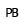

 Point On Bezier
Component Index > ASTools > Basic functions > PB
Creates a point on a Beziercurve inbetween 0 and 1. (DeCasteljau algorithm)
Inputs
| Name | ID | Description | Type |
|---|---|---|---|
| Controlpoints | P | Beziercurves controlpoints | List of Point |
| Parameter | t | Point on that curve between 0 and 1 | Number |
Outputs
| Name | ID | Description | Type |
|---|---|---|---|
| Point | P | Point on Beziercurve | Point |
Copyright © 2016 Robert McNeel & Associates.